Flight & Murmuration
Grasshopper Definitions: Bird-like Creatures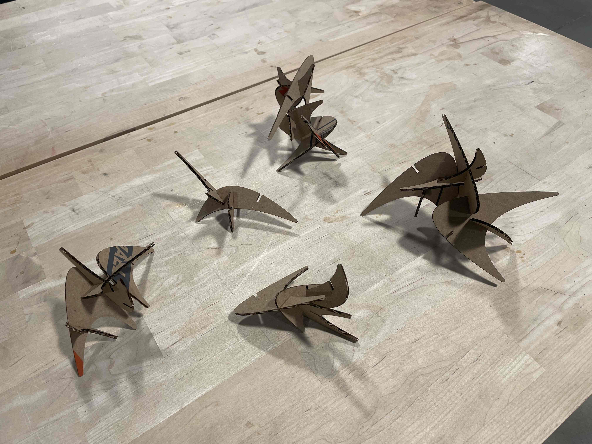
I originally wanted to start out the assignment by working on something that would look like a leaf, that I could piece together. However, the shapes that I intended to create (by my own lack of expertise in grasshopper) devolved into more so of simple curvatures, that when formed together reminded me of movements and forms of creatures in flight.
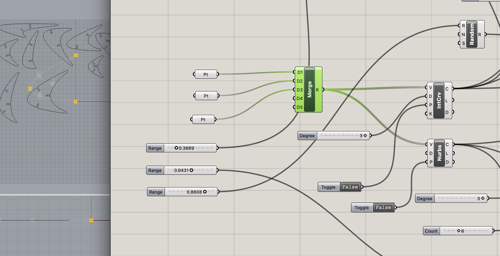
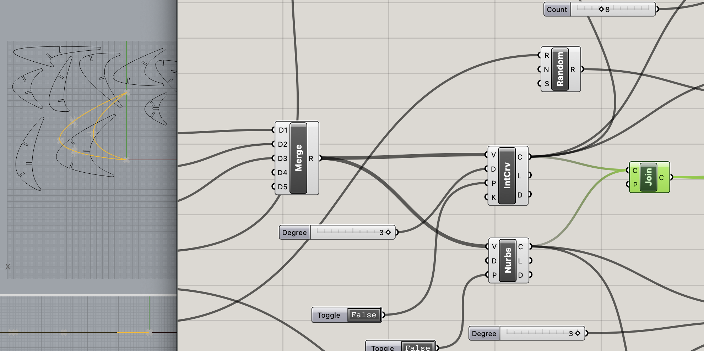
To create these curves that would fit together, I wanted to play around with randomly generated numbers. I had a grandiose idea of creating randomly shaped curves by defining random positions of 3 points; however, due to time constraints, I couldn't quite figure out how to randomize the point positions in each bake. Instead, manual specifications of the points via Rhino or Grasshopper is required. I also found about NURBS curve, which helped me create a closed curve on my intitially generated curve. I joined them together at their endpoints and filleted the edges so that it wouldn't come out so sharp when I laser cut it.
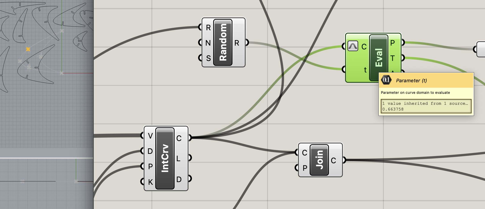
I had the curves, but I wanted to figure out a way to find points on a curves so that I can map my rectangles on them. Luckily, I found a video online explaining how to parameterize curves so that I can randomize points on surfaces of the curves. Using the numbers sliders, I was now able to specify the point on a curve in which I could place my rectangle (slot) on.
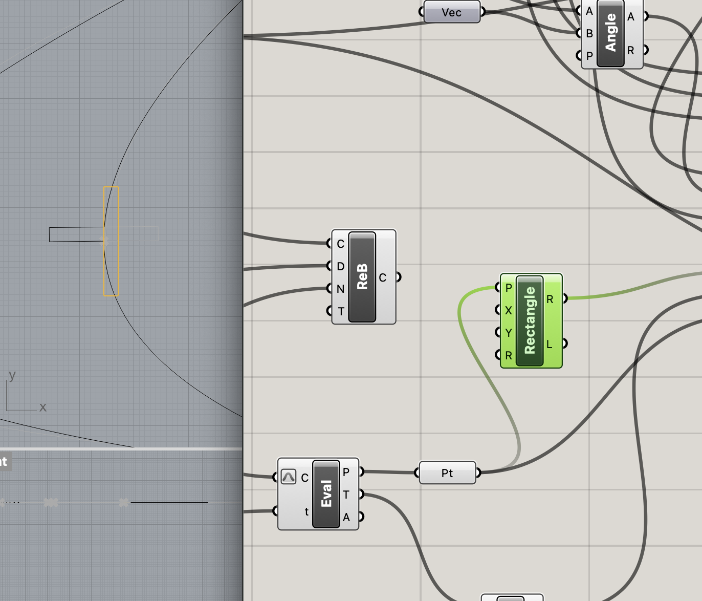
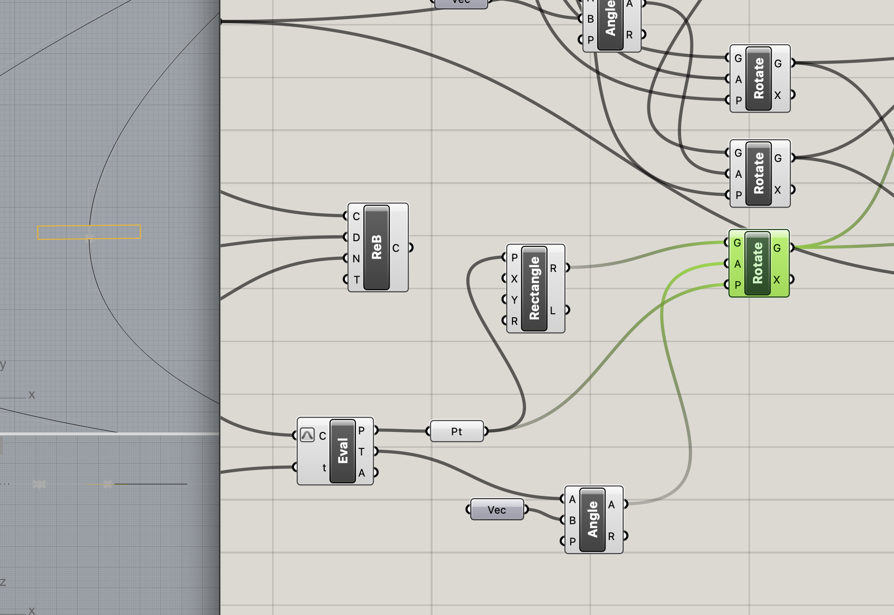
I specified the rectangle width to be 2.6 - the width of the cardboard that I measured in my previous assignment. The problem came when I had to rotate the rectangle. Luckily, the curve eval component provided me with a tangential vector at a point, which I used with combination of a normal vector to calculate the angle. I then used that calculation to rotate my rectangle to be orthogonal of the curvature.
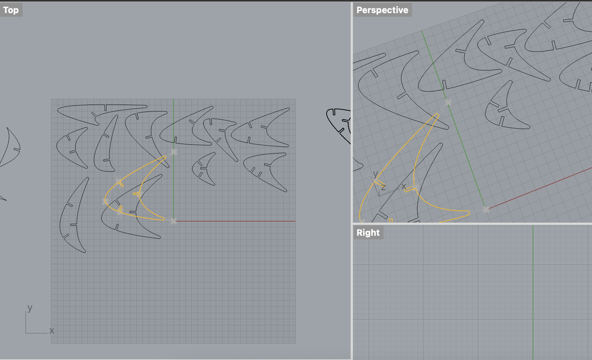
I then went ahead to duplicate these three points onto the two curves that I had created, to create shapes with either 2 or 3 slots. In order for future users who are using this grasshopper file to generate the shapes, they would just need to specify the point positions, and parameter values for the rectangle positions along the curve. These particular values had to be adjusted to account for overlaps.

 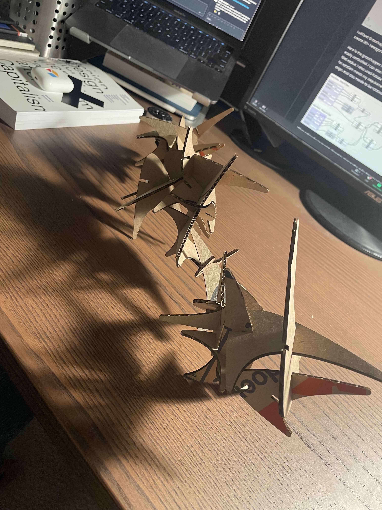
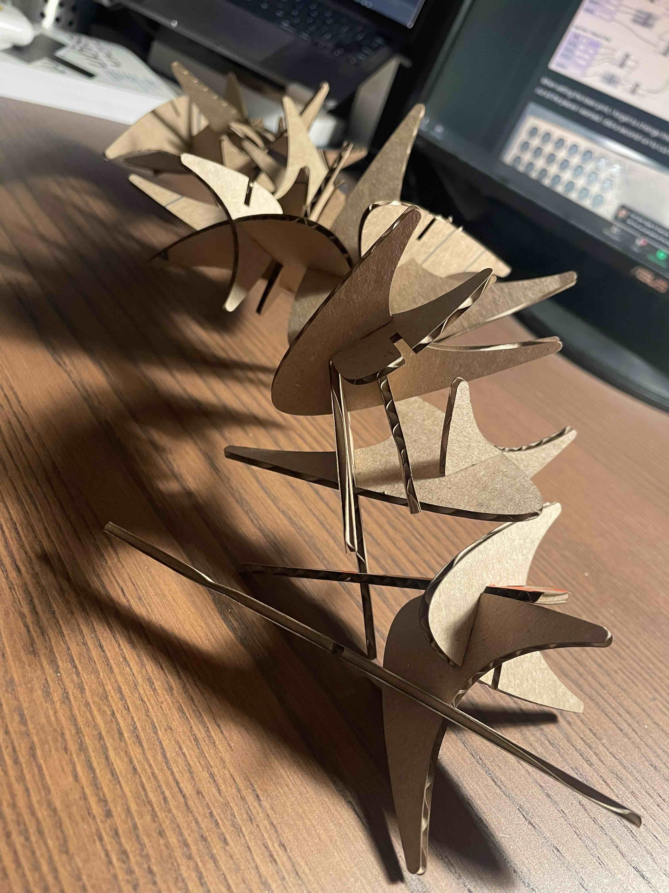
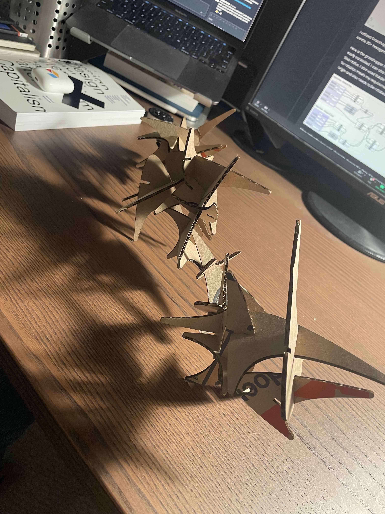
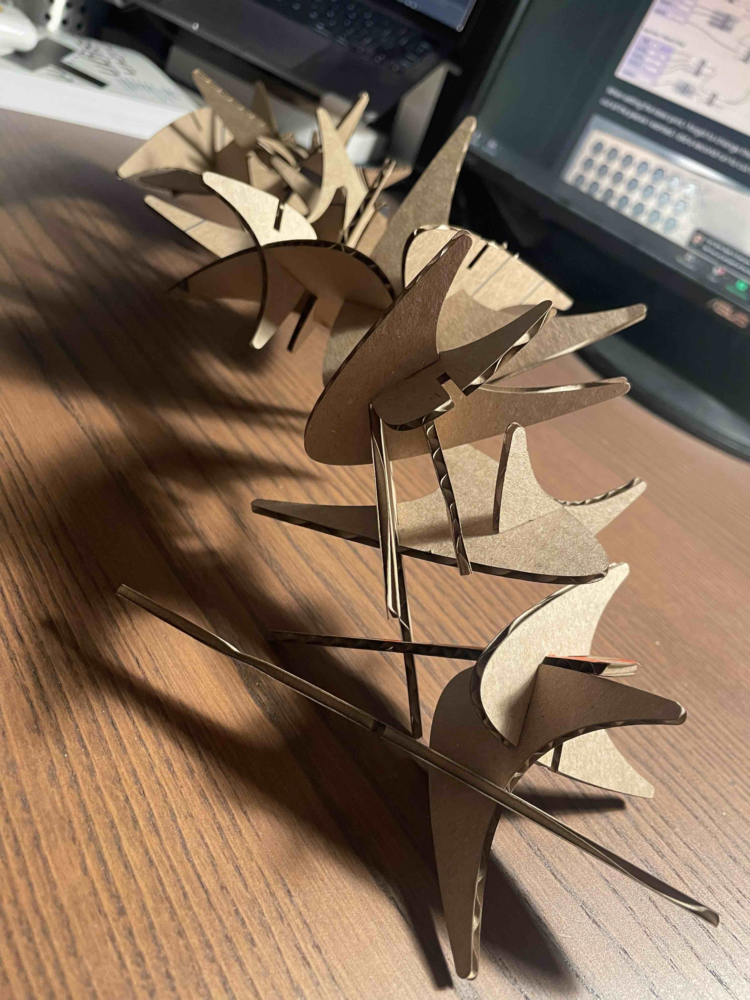
 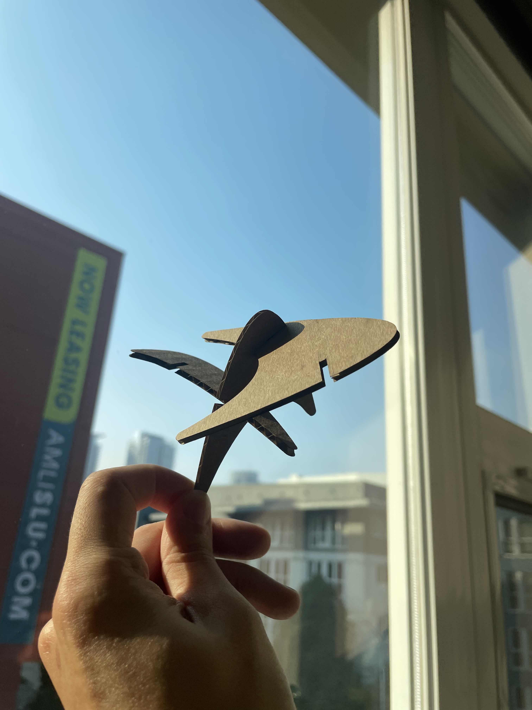
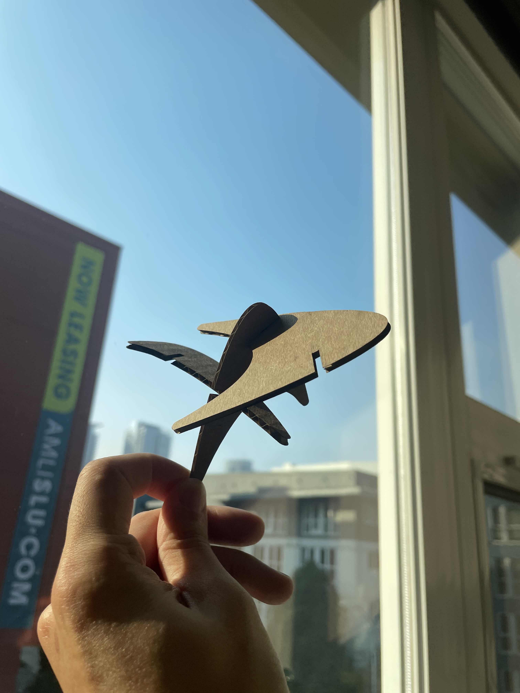
Documentation for Assignment 2:
Adobe Illustrator file
Rhino file
Grasshopper File
Credits:
Different types of curves in rhino
How to find points on a curve in Rhino